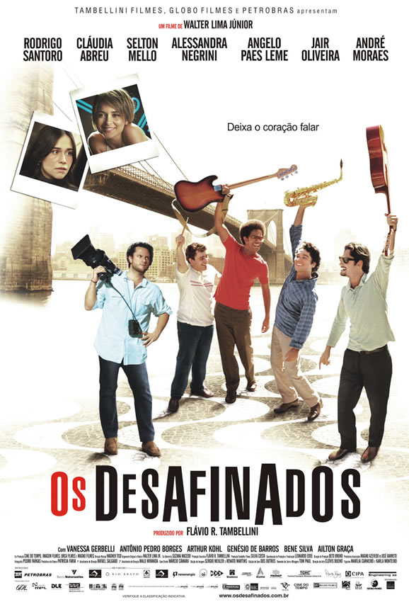

POSTS
[Bossa Nova]브라질에서 만든 보사노바 영화 "Os Desafinados / Out of Tune"
한국에는 천만년 후에 개봉한다에 전재산 걸겠음. 누구 내기할 사람?

[시놉시스]
희망과 새로운 출발의 기운이 흘러 넘치는 1962년의 브라질. 네 명의 친구들은 보사노바 밴드를결성하고 뉴욕 카네기홀에서 열리는전설적인 보사노바 콘서트에서 공연할 기회를 잡는다. 어느 날 센트럴 파크를 걷던 밴드의 피아니스트 호아큄은 근처에서 흘러나오는보사노바 리듬에 취하게 된다. 플루트를 부는 아름다운 브라질 뮤지션 글로리아에게 한 눈에 반해버리는 호아큄. 20대 초반인그들은 브라질의 대중 음악을 변화시킬 수 있다고 믿었고 그 결과로 브라질 역시 변화시킬 수 있다고 믿었다. <보사노바밴드데사피나도스>는 실화를 바탕으로 만들어진 작품으로 열정과 재능이 넘치는 이상주의자 예술가들의 꿈과 현실을 잔잔히 들려준다.
출처 :
http://www.cine21.com/Movies/Mov_Movie/movie_detail.php?s=base&id=25670
-
 Shady 2009/10/19 22:06 # 삭제 답글 애석하게도, 지금 삼청동 시네코드 선재에서 하고 있어요.
Shady 2009/10/19 22:06 # 삭제 답글 애석하게도, 지금 삼청동 시네코드 선재에서 하고 있어요. -
 sadButTrue 2009/10/19 22:41 # 답글 이미 이전(충무로 국제 영화제)에도 상영한 적이 있더군요. ㅎㅎ
sadButTrue 2009/10/19 22:41 # 답글 이미 이전(충무로 국제 영화제)에도 상영한 적이 있더군요. ㅎㅎ